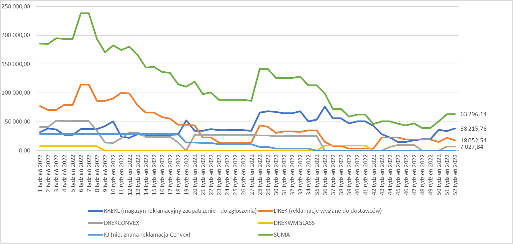

Kontrola Jakości
W poniższej tabeli to co widnieje na magazynie RREKL (aktualnie jest 33 590 PLN) - rzeczy na czerwono zostały zgłoszone do dostawców, nie są jeszcze przeniesione na magazyn reklamacji wysłanych czyli DREK. Planowana data zgłoszenia, która jest zaplanowana na ten tydzień przesunie się na następny z powodu zwolnienia lekarskiego na dziecko.
AKTUALNE PODSUMOWANIE WARTOŚCI MAGAZYNÓW REKLAMACYJNYCH
| LIUDMILA | 27.gru | 28.gru | 29.gru | 30.gru | Suma |
|---|---|---|---|---|---|
| Szyby | 0,00 | ||||
| Przegląd reklamacji z produkcji | 1,50 | 4,00 | 4,75 | 2,00 | 12,25 |
| Marcopol | 0,25 | 0,25 | |||
| Cięcie | 4,75 | 1,25 | 3,00 | 1,25 | 10,25 |
| Inspekcja okapów | 0,00 | ||||
| Testy palności | 1,50 | 2,25 | 4,50 | 8,25 | |
| Przerwa | 0,25 | 0,25 | 0,25 | 0,25 | 1,00 |
| SUMA | 8,00 | 8,00 | 8,00 | 8,00 | 32,00 |
 Miesiąc grudzień zamknięty z ilością 74 zgłoszeń.
Miesiąc grudzień zamknięty z ilością 74 zgłoszeń. Koszt serwisu: 21 137,15 PLN netto
Średni koszt jednego zgłoszenia: 285,64 PLN netto
Średni czas naprawy: 19 dni – spowodowany m.in. długim czasem wysyłki części serwisowych z MAAN